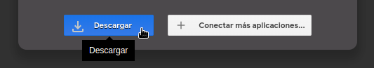
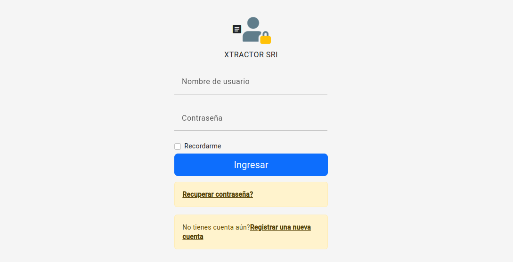

- - Dependiendo de la arquitectura de su computador 32 o 64 bits, Descargue el programa XTractor SRI desde el siguiente link:
eXTractorSRI 64 bits
eXTractorSRI 32 bits
- - Pulse el botón Descargar o Download y luego -> Descargar de todos modos.

Se descargará un archivo comprimido (.zip) con nombre "eXTractorSRI_x64.zip" o "eXTractorSRI_x32.zip"
- - Para poder descomprimir el archivo "eXTractorSRI_x64.zip" descargue el descompresor 7zip (opcional). Si ya posee un descompresor omita este paso.
Se descargará un archivo instalable (.exe) con nombre 7z2301.exe o 7z2301-x64.exe (ejecute e instale).
- - Ejecute el Sistema XTractor SRI.
Una vez descompreso se creará el directorio "eXTractorSRI_x64" o "eXTractorSRI_x32" y dentro de este se encontrará un archivo llamado "Iniciar".
Para poder ejecutar el sistema de doble click en "Iniciar"

Si la instalación ha sido satisfactoria se verá una pantalla de ingreso como en la imagen. En la cual podrá registrar una nueva cuenta.
- - Solución de problemas.
Si ha tenido problemas con el proceso de descarga e instalación porfavor póngase en contacto con nuestro centro de ayuda llenando el formulario de solicitud.
Solicitar servicio